255LB
The Juggernaut
3 × 85 lbHeavy chest pressing and standing press vectors
Built around real sessions. Two portable systems, six permanent bundles, and a full-body movement library.
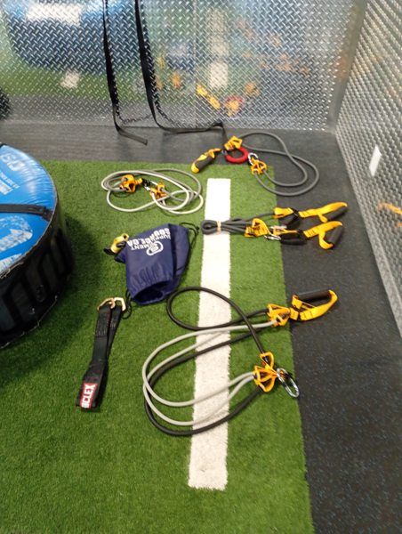
Portable attachment kit ↗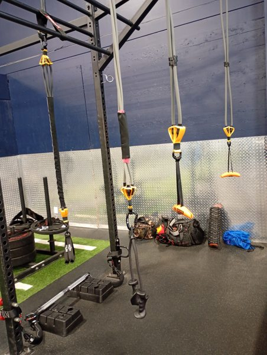
Elevated suspension lines ↗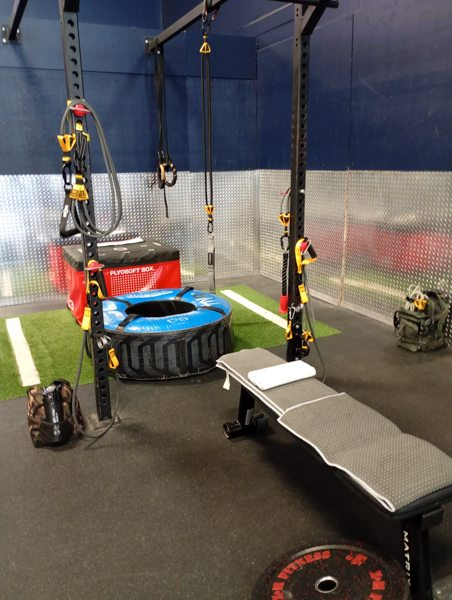
Bench / tire station ↗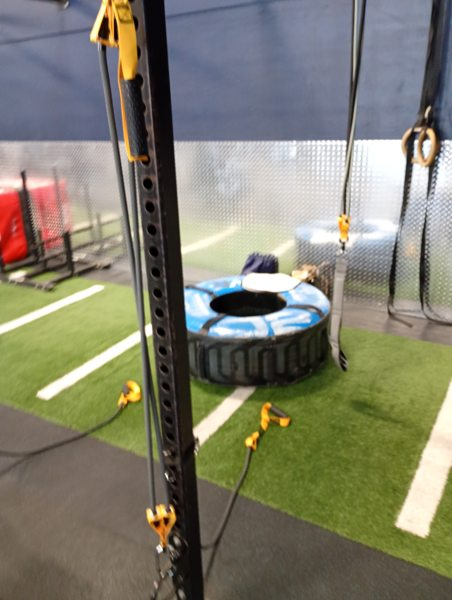
Rack straps & rings ↗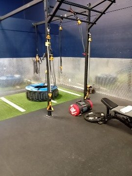
Turf-side rack layout ↗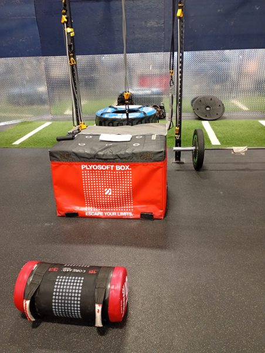
Box & rack station ↗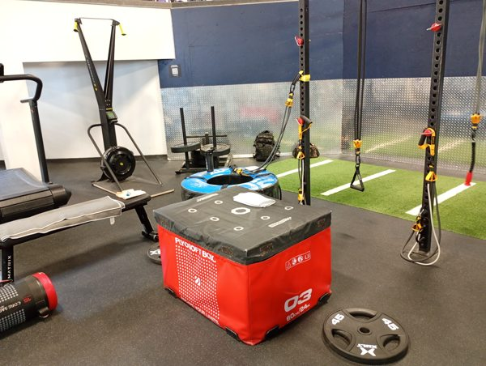
Bench support variation ↗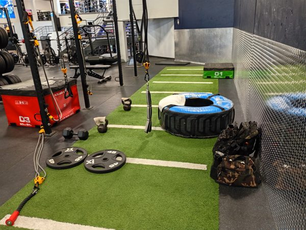
Rack-side working space ↗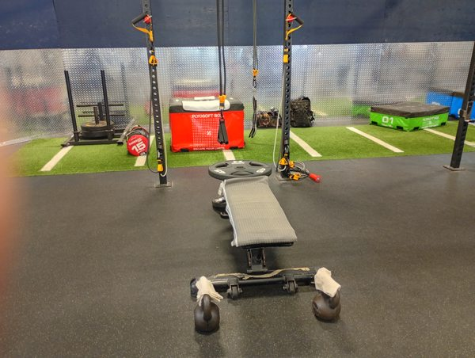
Centered bench station ↗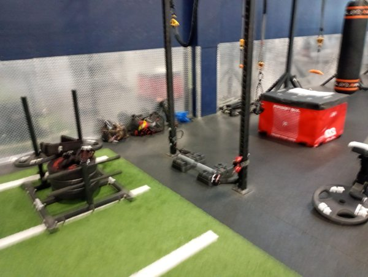
Sled & rig environment ↗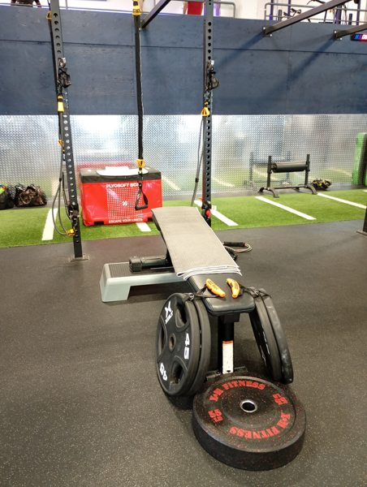
Bar / plate station ↗Turf conditioning lane ↗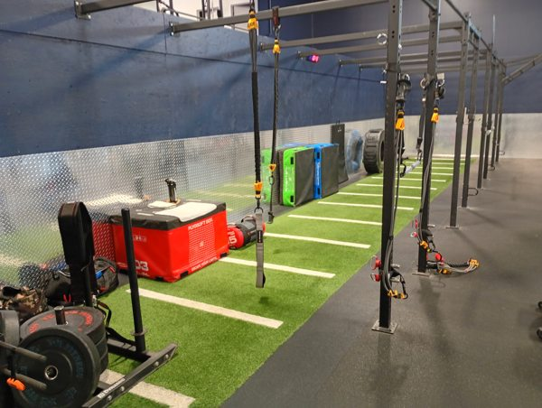
Wide rig arrangement ↗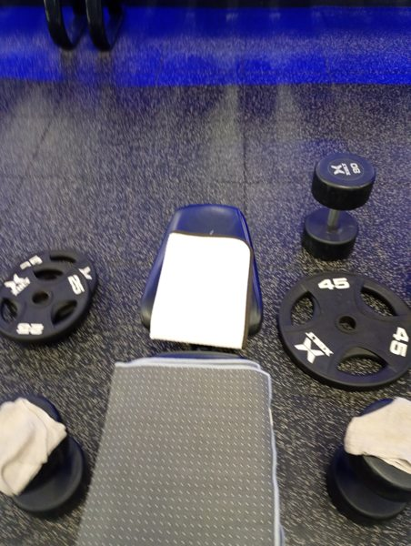
Bench / plates arrangement ↗Swipe through the photographs · tap any image to enlarge.
Permanent matched combinations, ready to move between push, pull and isolation work.
Heavy chest pressing and standing press vectors
Posterior-chain loading and heavy rows
Two separate matched sets for back work
THEFITGUY single rope · red bell-shaped stop
Shoulder raises and finisher variations
Isolation and deltoid fly variations
Band labels are nominal ratings. Their sums identify the bundles; they are not measured force at the hands, a constant load through the repetition, or a hardware load rating.
Lat sweeps, pulldowns, overhead triceps and face-pull variations. Bench or kneeling support sets the torso position relative to the line.
Rows, rear-delt sweeps, reverse flyes and side extensions. Facing, side-on and unilateral positions change the direction the torso must resist.
Kickbacks and selected drive configurations. The starting distance, hand height and split stance define the working path.
Current dedicated 3 × 55 lb triceps bundle; red bell-shaped stop.
Independent pulling grips described in the Kinetic Rig Architecture reel.
Pressing interface documented in the rig architecture caption.
Alternate rope documented in the earlier architecture; separate from the current THEFITGUY pairing.
Bilateral pressdowns in Series 004; distinguish this interface from the short-band bar system below.
Bodyweight support and balance variations; not interchangeable with elastic-band resistance ratings.
Choose a movement family, then open a card for anchor position, attachment, execution and source session.
22 movements
Watch on Instagram: Warmups Stretch 001
Watch on Instagram: Upside Down Tuesdays
Watch on Instagram: Resistance Band Series 001
Watch on Instagram: Resistance Band Series 004 · Hypertrophy Friday
Watch on Instagram: Resistance Band Series 004
Watch on Instagram: Resistance Bands Fridays · Resistance Band Series 001
Watch on Instagram: Resist Saturdays
Watch on Instagram: Resist Saturdays · Strength Fridays
Watch on Instagram: Resistance Band Series 002
Watch on Instagram: Resistance Bands Fridays
Watch on Instagram: Resistance Band Series 001 · Strength Fridays
Watch on Instagram: Resistance Band Series 004
Watch on Instagram: Resistance Band Series 004
Watch on Instagram: Resistance Band Series 004
Watch on Instagram: Resist Saturdays
Watch on Instagram: Resist Saturdays
Watch on Instagram: Resist Saturdays
Watch on Instagram: Resistance Band Series 002
Watch on Instagram: Hypertrophy Friday · Resistance Bands Fridays
Watch on Instagram: Resist Saturdays
Watch on Instagram: Resistance Band Series 003
Watch on Instagram: Resistance Band Series 003 · Plyosoft Box Core 001
Current owner-confirmed bundle counts take precedence over earlier reel configurations. Movement descriptions document my sessions; they do not establish a medical recovery outcome.
A separate compact system: two HPYGN heavy-duty kits paired with the Tribe Lifting three-piece threaded chrome bar and its rotating eyelets.
Two identical hybrid bundles · 240 lb combined nominal. Each side contains one 65 lb band and one 55 lb band. This is separate from the KUZARO Enforcer’s two matched 65 lb sets. Actual resistance varies with stretch and geometry.
Grey-black HPYGN bands with red-edge stitching. Two matching hybrid bundles connect to the Tribe Lifting chrome bar with rotating eyelets.
 Explore the real setup ↗
Explore the real setup ↗The chrome bar sits close to the rack base, connected on both sides through the short black band assemblies. This front view makes the low attachment position visible.
 Explore the real setup ↗
Explore the real setup ↗The short-band bar is mounted between the iron rack uprights at mid height. This owner-identified view shows the paired black assemblies, padded chrome bar and the bench positioned in front of the station.
Swipe through the photographs · tap any image to enlarge.
Mounting variations confirmed by the owner. The photographs show arrangements from different sessions; the current 65 + 55 lb pairing on each side remains the hardware specification.
Recorded in: Owner-confirmed setup
Recorded in: Owner-confirmed setup
Watch on Instagram: Calibrated Hypertrophy / Kinetic Rig Architecture
Use the same hybrid pairing, attachment arrangement and starting stretch when comparing this system across sessions. Record repetitions, range and controlled return alongside the configuration. The compact short-band bar station and the rack-based KUZARO grid remain separate entries in the training log.